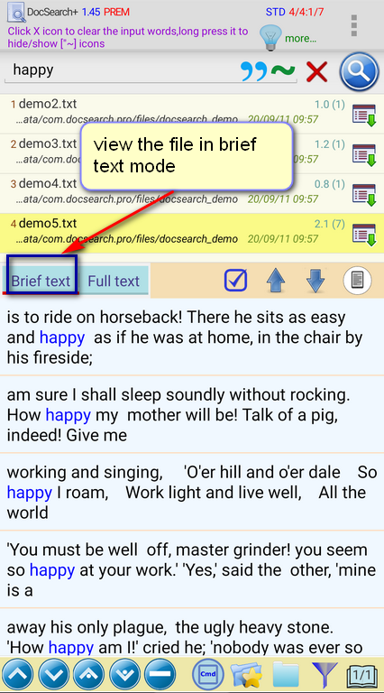
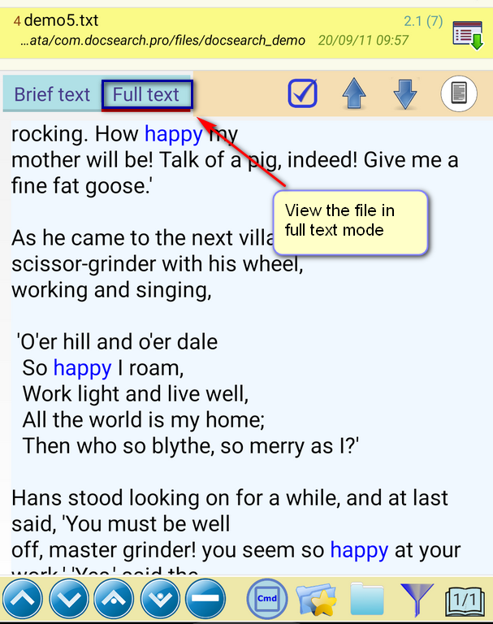
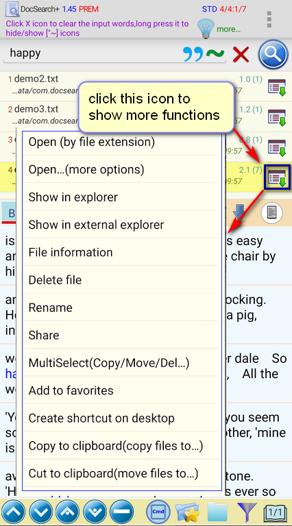

Once I find the files I want, what should I do
with them?
1. You can view the contents of these files in plain text mode, and
easily locate the search keywords in the file.
a. In brief text mode, you
can view a short paragraph of content where all keywords are located
b. In the full text mode,
you can view the entire content of the document, and easily switch the
position between each keyword.
2. You can copy, move, delete or share these files
3. You can open these files with other external related apps, for
example, open PDF files with a PDF reader
(For more operations on the main screen, please refer to "Menu
-> Help -> Brief User Guide -> Page 3")


